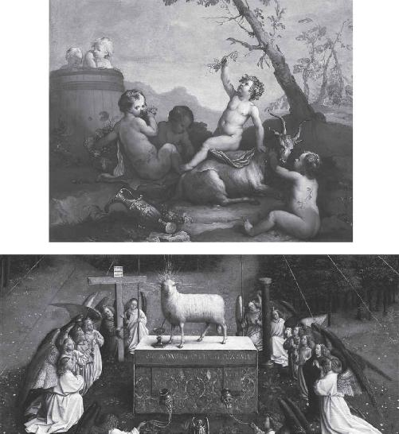
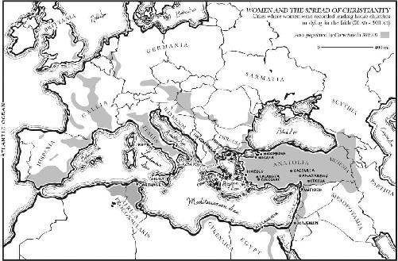

Just as surprisingly warm as yesterday, the sun is setting on a gorgeous Saturday in Paris. I bounce down from my Airbnb on the Île de la Cité and cross the Pont d’Arcole into the cobweb of streets in the fourth arrondissement. I’m heading for the watering hole that sprang to mind from my final moments in the Louvre, as I sat across from Marsyas gazing at the marble statue of Apollo the Lizard Slayer. After a brisk walk, I arrive at the bustling bar to claim the only remaining mini-table in the eye of the storm. Metallic reptiles scurry across the brickwork and mutate into tiled mosaics on the bathroom walls, assuring me I’ve landed in the Lizard Lounge. In the din of clanking glasses and drunken French conversation, I rummage through my stack of notes in preparation for the next face-off.
A few minutes later, my Roman Catholic friend joins me. Still no collar.
First things first. We order a blue cheese and mushroom burger and two sorely needed Scottish Brown Ales. Father Francis fills me in on the day’s Mind and Life meetings; I show him some of my photos from the Salle des Caryatides. By the time the food arrives, I’ve tried my best to convince the mild-mannered cleric that my investigation is no less heretical than his own. The Renaissance man across from me in the purple-collared shirt, peeking out from a charcoal sweater, is already entertained. But I can’t tell if he’s laughing at me or with me.
The theme of tonight’s dinner is apotheosis. What does it mean to become God? If Father Francis has no problem with lesser mortals like ourselves bursting into kaleidoscopic rainbows after decades of intense meditation, then why not simply drink the sacred potion and cut to the chase? At the end of the day, aren’t we both talking about that cryptic promise from Eleusis: overcoming the limitations of the physical body and cheating death? That “moment of intense rapture” sought by the maenads of Dionysus, until they “became identified with the god himself.” And aren’t he and Ruck both committing the same arch-heresy by suggesting that the original, obscured truth of Christianity has nothing to do with worshipping Jesus, and everything to do with becoming Jesus? Aren’t we all just gods and goddesses in the making?
Maybe the concept of apotheosis doesn’t sound particularly heretical today. But a few hundred years ago, it got the likes of Giovanni Pico della Mirandola into a load of trouble. In 1484 the upstart Italian was only twenty-one years old when he met Lorenzo de’ Medici, who promptly invited him into the Florentine Academy that was about to punch the Renaissance into high gear. Already a student of Greek, as well as Latin, Hebrew, and Arabic, the newest Florentine got to work writing Oratio de hominis dignitate (Oration on the Dignity of Man): the so-called Manifesto of the Renaissance. He wanted to publicly debut the Oratio, together with his 900 Theses, in Rome on the Epiphany of 1487, the God’s Gift Day. But Pope Innocent VIII was not impressed. He put a halt to the spectacle and condemned every one of Pico della Mirandola’s theses for “renovating the errors of pagan philosophers.”
All for the young man’s simple but revolutionary act of applauding the infinite goodness and unlimited potential of every man, woman, and child on this planet. Under the principle of ad fontes (“back to the source”), the humanists were just beginning to tap the wisdom of the founders of Western civilization in their original language. Whenever you do that, a nagging question inevitably surfaces: if the Greeks didn’t need Jesus to find salvation, why do we? In his search for answers, Pico della Mirandola went far beyond the “Mosaic and Christian mysteries,” giving a neo-pagan endorsement of Eleusis:
Who would not long to be admitted to such mysteries? Who would not desire, putting all human concerns behind him, holding the goods of fortune in contempt and little minding the goods of the body, thus to become, while still a denizen of earth, a guest at the table of the gods, and, drunk with the nectar of eternity, receive, while still a mortal, the gift of immortality?
The Vatican’s intervention was “the first case in history of a printed book universally banned by the Church.”1 And Pico della Mirandola was soon arrested on the Pope’s orders. Only after Lorenzo pulled some major strings was the young heretic freed into the protective custody of the influential Medicis back in Florence. So when I say this stuff is heretical, I mean it. Maybe no one goes to jail anymore for claiming to be God, but the doors of the psych ward are always wide open. Besides, it’s pretty well established in Catholicism that the only infallible human being is the Pope. And even then, he never lets it go to his head. As the mere successor to Saint Peter, the Supreme Pontiff would never equate himself with Christ, let alone God.
This conversation is full of land mines. And especially uncomfortable in the company of someone who once taught at the Pontificia Università Gregoriana (the Pope’s university in Rome). But I need Father Francis to weigh in on the pagan continuity hypothesis once and for all. If drugged wine was the Greeks’ path to immortality, did a drugged Eucharist offer the first Christians the kind of experience reported by the participants of the psilocybin experiments at Hopkins and NYU? If that original Eucharist could cause the “dissolution of the self” and “melting away of barriers” mentioned by Dinah Bazer—as well as by the Jewish, Christian, and Islamic mystics throughout history—then it all makes sense. But without the genuine psychedelic sacrament inherited from the Greeks, how could a placebo Eucharist convince anyone to drop paganism and the entrenched religion of their ancestors? In just four centuries, how did Christianity go from being an obscure cult of “twenty or so illiterate day laborers” in a neglected part of the Mediterranean to the official religion of Rome, converting half the empire, perhaps some thirty million people, in the process?2 What was the secret to Christianity’s success?
After the waiter sets the plates on the table, the priest invites the Holy Spirit to join us. No meal begins without a blessing. He recites the same prayer my classmates and I would drone in the cafeteria, just before every lunch at the Maternity of the Blessed Virgin Mary back in Philadelphia. As Father Francis discreetly utters the invocation, not attracting too much attention from the patrons only inches away at our backs, I can hear hundreds of little Catholic voices chanting in unison, “Bless us, O Lord, and these thy gifts, which we receive through thy bounty, through Christ our Lord.”
“Amen!” I proclaim. Advantage Father Francis. Helpful as he has been with my investigation thus far, I’m reminded that I’m sitting in a bar with a man of the cloth who might not appreciate the full implications of Ruck’s psychedelic hypothesis, rendering Jesus just another healer in a long line of drug-dealing ancient masters.
In The Apples of Apollo: Pagan and Christian Mysteries of the Eucharist, published in 2001, Ruck devotes almost a hundred pages to this subject in a chapter titled “Jesus, the Drug Man.” It’s actually a decent translation of “Jesus,” whom the Greeks knew as Iesous (since they never heard of the letter “j”). Iesous, in turn, was a spin-off of Iesoue, the Greek word for Joshua, the Israelites’ leader following the death of Moses.3 But according to Ruck, the true origin of Jesus’s Greek name is the root for “drug” or “poison” (ios), which supplies the Greek words for “doctor” or iatros (ἰατρός). Ruck says the “drug man.” Either way, it’s unlikely a Greek speaker of the first century AD would have heard the name Iesous and not thought of Ieso or Iaso, the Greek goddess of healing and the daughter of Asclepius, who was taught the art of drugs, incantations, and love potions by the centaur Chiron.4 It’s an association that the Gospel writers didn’t mind playing up a bit. Each of them uses the verb iaomai (ἰάομαι) to describe Jesus’s healing miracles. A literal translation would be “to cure by means of drugs.”5 In Matthew 9:12, Mark 2:17, and Luke 4:23, after all, Jesus does specifically refer to himself as iatros, which instead of “drug man” is generically rendered as “physician.”
But there’s no way I’m launching headfirst into all that. The Gospel of John is all we need tonight. By the second round of beers, I figure what better venue for a little Bible study. I plunge into my leather pouch, wriggle two books from their plastic casings, and lay them on our sacrilegious desk: the hardback Loeb edition of Euripides that we read yesterday in the Cour Napoléon, and the 1829 edition of the New Testament, entirely in Greek. I’ve had it since college, the first and last Bible I ever purchased. Together these are our two holy books for the evening: Dionysus the Elder meets Dionysus the Younger.
“The more you read the Greek,” I start off, “the weirder it gets.” Though Father Francis doesn’t know it, I’m referring to A. D. Nock’s secret system of “symbols” and “language” that John used to tip off the Greek speakers of the time who were either initiated into or at least familiar with the Mysteries. “Because the words really matter.”
“There’s a lot in there,” the priest agrees.
“If you read the The Bacchae and the Gospel of John side by side, it’s kind of funny. The same scenes show up, sometimes even the same words. Greek vocabulary that doesn’t appear anywhere else in the three Synoptic Gospels—Matthew, Mark, or Luke.”
I lead my personal tutor through a couple of the better examples. Like the 180 gallons of wine at Cana. Or the Son of God in the “lap” of the Father. Or the “crown of thorns” (akanthinon stephanon) and “purple cloak” (porphuroun himation) that the Roman governor Pontius Pilate throws on Jesus in John 19:5, publicly mocking him as the “King of the Jews.” In The Bacchae, the pointy crown fashioned from the fruit of nature is the definitive way of identifying the God of Ecstasy and his disciples.6 And in Greek art Dionysus himself is frequently seen wearing such a crown, along with his trademark purple cloak.7 In The Dionysian Gospel, Dennis MacDonald asserts that Pilate’s overt presentation of Jesus, bearing his characteristic color for all to see, is yet another conscious clue to Greek speakers that both wine gods were cut from the same cloth (pun intended).
With a dozen more examples from MacDonald’s study to discuss, I pause and admit that none of these similarities are particularly breaking news. In fact, the early Church Fathers were well aware of the disconcerting relationship between Dionysus and Jesus.
“Well, they knew Greek!” interjects Father Francis. “Of course they could read Euripides. How could anyone possibly think they didn’t understand their own language?”
So the question is not whether these parallels exist, but how to interpret them. Or as far as the ancient theologians were concerned, how to explain them away. In the second century AD, Justin Martyr’s defense was to blame Satan for duping the Greeks into believing that Dionysus was the real Messiah, not Jesus. Even though Dionysus was reportedly born of a virgin, discovered the vine, and later “introduced wine into his Mysteries”—just like Jesus—the “Devil” apparently used the god from Scythopolis to obscure “the prophecy announced by the patriarch Jacob and recorded by Moses.”8 Justin conveniently sidesteps the fact that Dionysus, or some form of the wine god, predates the Biblical prophets by a couple thousand years.9 But again, this entire debate is lost on those today who can’t follow the Greek. As are the many secret “symbols” and “language” in the Gospel of John.
There is no better example than John 6:53–56, the Evangelist’s bizarre take on the Eucharist. It is the most explicit and intentional Dionysian reference in all of John’s Gospel. In English Jesus’s fascinating words at the synanogue in Capernaum go something like this:
Very truly I tell you, unless you eat the flesh of the Son of Man and drink his blood, you have no life in you. Whoever eats my flesh and drinks my blood has eternal life, and I will raise them up at the last day. For my flesh is the True Food and my blood is the True Drink. Whoever eats my flesh and drinks my blood remains in me, and I in them.
But the original language is a different matter. No Greek speaker of the time could have heard this passage and not thought of Dionysus. In those few lines of Greek, John’s audience would find the key to the Christian Mysteries. The same key they already knew from the Dionysian Mysteries: apotheosis by means of what John calls the “True Food” and “True Drink” that promise “eternal life.” In a populist move Jesus would invite all of humanity to do the very thing that would get Pico della Mirandola arrested by the Pope centuries later—to join “the table of the gods” and receive “the gift of immortality” by getting drunk on “the nectar of eternity.” The only thing separating us from God is a glass of magical wine. And John’s language is equally clear that you didn’t need a priest to mix it.
As it turns out, no one was more heretical than Jesus.
But to put John’s Eucharist in context, it’s important to review the origins of the sacrament itself. While New Testament scholars acknowledge the Bible isn’t the most accurate record of historical events, they have two general criteria for assessing authenticity: the age of the sources, and their multiplicity. The Gospels of Matthew, Mark, Luke, and John were all written between AD 65 and 100, and each presents an account of the Eucharist. The earliest written evidence of the Last Supper, Paul’s Letter to the Corinthians, was probably composed two decades after Jesus’s death, around AD 53. It’s as close as we get to the upper room at King David’s burial site in Jerusalem, where this extraordinary ritual was said to take place. And it too includes the dinner. In 1 Corinthians 11:25, Paul quotes Jesus instructing his friends to continue feasting on his body “in remembrance of me” after he’s gone.
So that’s where the Mass came from—a two-thousand-year-old fit of cannibalism reenacted to this day, multiple times per day, in churches on every continent for billions of faithful. The ritual, once perceived as an illegal act of human sacrifice in the Roman Empire, is now the Eucharist. What Pope Francis has referred to as the “beating heart of the Church.”10 He says the Mass is not only a “commemoration of what Jesus did at the Last Supper,” a mere symbol, but the “greatest of gifts” from God to mankind, “essential” for salvation.11 Like the advanced religious biotechnology of the ancient Near East discussed in the last chapter, the Pope explicitly identified the “precise objective” of Jesus’s Eucharistic ceremony during a homily from St. Peter’s Square in 2015: “that we might become one with him.”12
Eating the god to become the god. Drinking the god to become the god.
Long predating the Egyptians, Canaanites, Phoenicians, and Nabataeans, the practice has deep roots in the human psyche. Jesus must have gotten the idea from somewhere. But it certainly wasn’t his Jewish upbringing, since the devouring of flesh and blood “amounts to a reinstatement of human sacrifice, which in Judaism was anathema. Indeed a large part of the Hebrew Bible constitutes a campaign against human sacrifice.”13
So speculation began percolating in the late nineteenth century. One of the first heretics to weigh in on the pagan continuity hypothesis was Sir James George Frazer. His first edition of The Golden Bough (1890) scandalized the rather devout public of the time. Part of Frazer’s study framed Christianity’s central beliefs as unoriginal relics of a dark pagan past. He further developed this theory in the years to come, unveiling a masterful analysis of all the primitive rites of theophagy (eating of the god) that long preceded the familiar Eucharist:
The flesh and blood of dead men are commonly eaten and drunk to inspire bravery, wisdom, or other qualities for which the men themselves were remarkable.… It is now easy to understand why a savage should desire to partake of the flesh of an animal or man whom he regards as divine. By eating the body of the god he shares in the god’s attributes and powers. And when the god is a corn-god, the corn is his proper body; when he is a vine-god, the juice of the grape is his blood; and so by eating the bread and drinking the wine the worshipper partakes of the real body and blood of his god.14
Frazer concluded that “the coincidences of the Christian with the heathen festivals are too close and too numerous to be accidental.” The controversy has swirled ever since, pitting Church authorities against secular scholars in often-heated exchanges that would eventually include none other than the Reverend Dr. Martin Luther King Jr. The Baptist minister and future leader of the civil rights movement tried to broker some middle ground in his 1950 paper “The Influence of the Mystery Religions on Christianity.”15 For Dr. King it was pointless to deny that Christianity “was greatly influenced by the Mystery religions, both from a ritual and a doctrinal angle.” But rather than “deliberate copying,” he preferred “a natural and unconscious process” that placed the religion of Jesus in historical context, “conditioned by the contact with the older religions” and the “general trend of the time.”
The “general trend” in the eastern Mediterranean of the first century AD was apotheosis by means of drugged wine and other intoxicants, whether in the marzeah or the Dionysian Mysteries. Of course the Eucharist would have found inspiration in those traditions. But in order for Dionysus to pass the baton to Jesus, there could be no room for ambiguity. So with all due respect to Dr. King, it appears that John did, in fact, deliberately copy the language of Euripides to make the greatest recruitment pitch in the history of Christianity. And perhaps the most significant point of his entire Gospel: the sacrament of Dionysus and the sacrament of Jesus are one and the same. Both of them are steeped in the same primitive rites of theophagy that had been transforming archaic humans into gods since time immemorial.
As Jesus announces the key to the Christian Mysteries in John 6:53–56, he makes crystal clear that the “True Food” and “True Drink” of his flesh and blood are nothing less than the flesh and blood of Dionysus. Not only because the words that John uses for “flesh” (sarx/σάρξ) and “blood” (haima/αἷμα) are identical to what Euripides wrote in the The Bacchae five hundred years earlier, but because of what Jesus asks his followers to do to that “flesh.” Twice in this passage the Evangelist drops the word trogon (τρώγων). But to translate trogon as “eat,” as do most English translations of John’s Gospel, is at best to ignore, and at worst to suppress, the visceral act of theophagy so obviously intended to jump off the page. Yet another language barrier, stubbornly fixed in place for centuries.
I read the Greek of John’s Eucharist aloud to Father Francis until I get to trogon. I reach into my pocket, unlock my iPhone, and open my Ancient Greek dictionary app. Yes, there’s an app for that. I type in trogon and show the screen to my friend.
“To gnaw, to munch,” affirms the priest, parsing through the dense mix of Greek and English characters on my phone.
Only in John’s Eucharist does trogon appear. Indeed, the only other instance of the verb trogon in the entire New Testament is in Matthew 24:38, in reference to the pagan feasting of the pre-Flood population “in the days of Noah.” Why would Jesus ask people to gnaw and munch on his flesh in such graphic, barbaric language? In The Dionysian Gospel, Dennis MacDonald believes the Greek of John points rather obviously to “Dionysian cult imagery,” “specifically the eating of the flesh and blood of the god and the immortality that initiates gain by such activity.”16 How could any Greek speaker of the time conclude otherwise?
The God of Ecstasy lived in the wine, for sure, but there were other ways of consuming his divine blood. As Ruck made clear in The Road to Eleusis, “Dionysus was the god of all inebriants and not of wine alone.” In addition to psychedelic plant life, the shape-shifting God of Ecstasy could come in many different animal forms. Goats were the standout favorite. As a matter of fact, the root of the English word “tragedy” that Dionysus gave birth to as the god of theater is tragos (τράγος), the Greek “goat” that was ritually sacrificed during competitions in Athens. So it’s no surprise in The Bacchae when the chief priest of the Dionysian Mysteries is pictured “in pursuit of the shed blood of the slain goat.” He will suck the gushing fluid straight from the carcass, gnawing and munching the uncooked meat in a gory mess. Euripides calls it “the thankful meal of raw flesh,” the omophagon charin (ὠμοφάγον χάριν). This charin is the same root of the verb eucharisteo (εὐχαριστέω), “to be thankful.” It appears fifteen times in the New Testament. And it is, of course, where we get the word “Eucharist.”
But what’s so psychedelic about goats? In Entheogens and the Development of Culture: The Anthropology and Neurobiology of Ecstatic Experience, the scholar Alan Piper wrote a thoroughly well-sourced essay exploring the mind-altering effects of flesh, blood, and other bodily fluids from animals known to forage on psychoactive plants, herbs, and fungi.17 Piper puts particular emphasis on goats, including their love of juniper, which might explain all the guzzling of “warm goat’s blood” by the Hunza people of the Hindu Kush from the last chapter. Regarding the Dionysian meal, Piper believes the ritual may have facilitated the ingestion of certain hallucinogenic but otherwise poisonous alkaloids that could be better metabolized by the sacrificial animals, it often being “necessary to consume the flesh raw to preserve or maximize its psychoactive potency.”18
Either way, goats didn’t suit Christianity for some reason. Too wild, too rustic. So instead of all the goat-men like Pan and Marsyas and the rest of the fauns and satyrs from the Louvre’s Salle des Caryatides, John’s Gospel opts for an adorable substitute. In his first chapter, Jesus is referred to as the “Lamb of God” or amnos tou theou (ὁ Ἀμνὸς τοῦ Θεοῦ). Like the Wedding at Cana, it’s another of John’s inventions that will echo for centuries in Christian art—in the Ghent Altarpiece, for example, which shows the holy blood draining from the chest of the still-living lamb directly into the Eucharistic chalice. It is the chalice of the Mass that holds the blood of Jesus to this day, just like the blood that once poured from the goat as the blood of Dionysus to become the Eucharist of raw flesh (omophagon charin) for Euripides.
Whether you gnawed and munched on the lamb, or gnawed and munched on the goat, the result was supposed to be the same. Immortality. But what does it all mean?
We have no physical evidence for the mass slaughter of psychoactive lambs across the paleo-Christian world. It looks as if the gruesome meal was left in the backcountry where it belonged. So in John 6:53–56, when Jesus says his flesh and blood are the “True Food” and “True Drink,” he could have only meant the bread and wine of the Eucharist. And John could have only intended his Greek speakers to think of the blood of Dionysus. When Jesus asked his Apostles to drink it, he wasn’t the first person in history to float the idea. Plutarch recorded the Egyptian belief that wine was the blood of those who had “battled against the gods.” Even in the Old Testament, wine is called the “blood of grapes.” But the fans of Dionysus took the image to a whole new level. The Ancient Greek musician and poet, Timotheus of Miletus (ca. 446–357 BC), explicitly refers to holy wine as the “blood of Dionysus” or haima Bacchiou (αἷμα Βακχίου). To drink it was to drink immortality. This ancient precedent for the magical wine of Jesus was certainly not lost on the great Walter Burkert. It was the God of Ecstasy, the classicist openly recognized, “whose blood is represented in the sacramental drinking of the wine.” Long before the Last Supper, “the drinker of the [Dionysian] wine would be drinking the god himself.”19

The Infant Bacchus, painted by the circle of Hendrik Willem Schweickhardt in the eighteenth century (above). The Ghent Altarpiece, or the Adoration of the Mystic Lamb, completed by Hubert and Jan van Eyck in 1432 (below), currently in St. Bavo’s Cathedral in Ghent, Belgium. Over time, the barrels of wine and bunches of grapes associated with the blood of Dionysus’s goats transformed into the wine/blood of the Christian sacrament pouring from the Mystic Lamb.
For John’s audience, the morbid language about drinking the blood of Jesus was not a call to animal sacrifice. It was a dog whistle to Greek-speaking initiates everywhere that Christianity’s state-of-the-art, Eucharistic meal was based on ancient Dionysian precedent. And, by extension, carried just as much of a mind-expanding kick as the pharmakon of Greek wine. The same pharmakon that Father Francis recited from The Bacchae in the Cour Napoléon. After all, this was the same Jesus who earlier in John performed the wine miracle at Cana, and who later in John would refer to himself as the “True Vine.” The same Jesus raised among the vineyards of Galilee, where fortified wine had been a chemical reality ever since the Canaanites. The “True Drink” was no ordinary drink. It was a tool. The Drug of Immortality that might teach the first Christians how to die before they die.
The Gospel of John is full of references to the concept of death and rebirth. In John 15:13, Jesus says: “the greatest way to show love for friends is to die for them.” In John 3:3, he adds, “I tell you for certain that you must be born again before you can see God’s Kingdom.” And the celestial visions that follow the mystical experience are emphasized time and again. In John 9:39, “I am here to give sight to the blind.” In John 1:51, “I tell you for certain that you will see heaven open and God’s angels going up and down.” The strange, hallucinatory effect that Dionysus has on his followers is identical in The Bacchae. “Now you see as you ought to see,” the wine god tells King Pentheus following his conversion to the wine god’s new religion.
And just as in the Dionysian Mysteries, with its long tradition of the drugged wine, in the Gospel of John this new sight doesn’t come about by accident. Access to the Kingdom of Heaven is not based on blind belief, or the simple act of accepting Jesus as your personal Lord and Savior, as many Christian denominations profess today. The Greek of Jesus couldn’t have been more explicit in John 6:53–56, when he revealed the key to the Christian Mysteries. You had to actually do something. You had to sample the “True Drink.” That “communion with the god, the goal of all mysticism” is best achieved through the fruit of the vine, says historian Philip Mayerson: “Once divinity had entered into the celebrant, deity and devotee became one, god and man became one.”20
In the end John is saying that the Christian Mysteries would be as meaningless without their Eucharist as the Greek Mysteries would be without theirs. You do not become one with Dionysus by reading about him, or praying to him. You do it by drinking him. Even by the most mainstream interpretations of the Dionysian Mysteries, the wine of Dionysus is a pharmakon that results in apotheosis.
If the Dionysian drink did all that, then the “True Drink” of John’s Gospel had to do the same. John 6:53–56 is how the Greek pharmakon became the Christian pharmakon athanasias. If Jesus is the new Dionysus, then his sacrament had to have the same effect as the Dionysian sacrament. His wine had to be just as unusually intoxicating, seriously mind-altering, occasionally hallucinogenic, and potentially lethal as all the holy wine from Galilee and Greece. And a shot of his “True Drink” had to transport you, the same way the initiate on the Borghese Vase is slumped over in ecstasy, carried along by a goat-man.
On any given Sunday, how many people leave church looking like that?
This, then, is the real relationship between Dionysus and Jesus. And the real meaning behind all the Dionysian imagery that John the Evangelist went to such great lengths to include throughout his Gospel: the 180 gallons of wine at Cana, the Son of God in the “lap” of the Father, the crown of thorns and purple cloak, the Lamb of God, the True Vine, the gnawing and munching on the flesh of Jesus. It was all leading to a bloody Eucharist that would actually speak to Greek-speaking pagans who had a perfectly adequate Eucharist of their own and didn’t want to see it disappear under the Roman Empire. And the only way to do that is with the secret “symbols” and “language” that the initiates would actually understand.
It all makes sense to me. But I wonder if the priest reads the Greek the way I do.
Hedged in by twenty-first-century, French-speaking bacchants and maenads, I unload my burning questions on Father Francis. Why is John’s Eucharist so very different from the Synoptics? Why the macabre vocabulary about gnawing and munching on the Eucharistic meal of raw flesh and blood, straight from The Bacchae? Why the “True Drink”?
The priest takes notes of all the similarities between Jesus and Dionysus, and the odd language in John 6:53–56. As Bob Marley’s “Buffalo Solider” blares over the Lizard Lounge’s speakers, and the French chatter rises to a crescendo, the priest looks me straight in the eye and cautions, “But it doesn’t mean that Jesus never existed … or that Jesus is Dionysus. It means this is the version of Jesus that John chose to present. As an esthetic.”
Father Francis reminds me that John’s was the last Gospel to be completed, probably toward the end of the first century AD. And that he was writing for a specific community of early believers in Ephesus, the same Greco-Ephesians on the western coast of Anatolia to whom the Greco-Syrian Ignatius would soon address his letter about the pharmakon athanasias.21 “Just think about Ephesus,” insists the priest. “It’s one of the largest cities in Asia Minor. And here’s this tiny Christian community. So their mystical experiences are those of a minority group that’s completely surrounded and swallowed up by the gigantic pagan community, right?”
In that environment the words that come out of Jesus’s mouth in John 6:53–56 don’t actually belong to Jesus. They don’t even belong to John. “They were said as homilies of ecstatic individuals channeling Christ in the liturgy,” Father Francis continues, pointing to the Greek of the weathered Bible lying open on the table. “John’s Last Supper scene is poetic theology that doesn’t correspond at all to the Last Supper of the Synoptics, because it’s all coming out of a much later tradition of ecstatic, prophetic speech. Where the followers of John’s community are channeling the voice of Christ in their time. Because Christ is just as much present in the Eucharist as he is in Galilee in the year 30. In the year 90, he’s still risen. He’s still there.”
When it comes to the pagan continuity hypothesis, Father Francis is a believer, I’m pleased to learn. He doesn’t deny the similarities between the Dionysian and Christian Mysteries. And fluent in the Greek, he can’t dismiss the secret “symbols” and “language” that seem to be intentionally included in John’s Gospel. But more pressing for both of us is why John would have presented a very Dionysian Jesus to the Greek mystics in Ephesus. The obvious answer is to communicate on their level, to convince the Greek speakers that they could find in Christianity everything they loved about the Dionysian Mysteries.
But what made the earliest Christians believe that Jesus could come back from the dead to share in their ritual meal? Was it really a psychedelic Eucharist? Father Francis’s notion of paleo-Christians possessed by Jesus and prophesying in the language of Euripides makes me think of Apollo’s priestesses at Delphi, or a coven of maenads overtaken by Dionysus. In addition to the marzeah, it also sounds eerily like the skull cults and graveyard beers that were in existence for thousands of years in Anatolia before the Christians came along. There the whole point was to enter the underworld, making contact with the departed ancestors and the otherwise invisible gods and goddesses. I can’t help but think of the Phocaeans, who left their homeland in Ionia just a couple hours north of Ephesus to found the Greek settlement in Massalia, France, before moving on to Emporion, Spain, and Velia, Italy. If John was looking for Greek-speaking mystics, Ionia was the place.
The Ephesians were just the kind of audience that wanted to see their Greek Mysteries survive. The very people who would have understood all the “symbols” and “language” about the gnawing and munching on the raw flesh and blood for the one thing John was really trying to say. The Dionysian sacrament and the Christian sacrament were one and the same. If anybody could have recognized the incredible innovation taking place in John 6:53–56, it was the Ephesians. In defiance of all tradition, the outdoor churches of Dionysus were being domesticated. After centuries in the wild mountains and forests of the eastern Mediterranean, John was offering a safe haven for the magical wine, inviting it into people’s homes. What was once a sacrilegious act worthy of the death penalty in classical Athens was becoming a new way, perhaps the only way, of keeping the Greek Mysteries alive in the Roman Empire. But that awesome responsibility fell on one, very specific gender.
Women were the main beneficiaries of the primordial rite of communion that brought the living into contact with the dead, and turned mere mortals into goddesses. In her 1979 article “Ecstasy and Possession: the Attraction of Women to the Cult of Dionysus,” Ross Kraemer (professor of religious studies at Brown University) accumulates all the evidence “for levels of cultic initiation” that separated men and women in the ancient world. Reviewing the many texts, inscriptions, and tomb epigrams that prove these Dionysian rituals actually existed in the real world—and not just Euripides’s or John’s imagination—Kraemer concludes that men may have taken part in only the “lesser activities,” while “initiation with its practices of possession and sacrifice [were] denied to them.”22 Except, of course, for the occasional chief priest. In their case Kraemer notes a “clear suggestion of identification of the male celebrant with Dionysus … who at certain times during the ritual identified with the god himself” by joining in the women’s Eucharist of raw flesh and blood (omophagon charin).23
If Jesus as the Lamb of God is an alternate Dionysus, as John went to extraordinary lengths to demonstrate throughout his Gospel, what about those twelve men traditionally assembled around the table of the Last Supper? Are they witnessing the birth of a bloody, Eucharistic ritual that was otherwise largely designed for women?
Father Francis reminds me of the demographics in Ephesus, where women were accorded special honor from its earliest days. One of the Seven Wonders of the Ancient World, the Temple of Artemis in Ephesus was, of course, renowned in antiquity. The original site was sacred to the Amazons, the ferocious tribe of female warriors considered the legendary founders of the ancient city who once upon a time performed rituals there.24 When John’s Gospel started making the rounds, women played a prominent role in Ephesian affairs, occupying privileged positions in sacred institutions, including the fifteen women who served as the high priestesses of the imperial Roman cult. It was the largest group of female religious leaders anywhere in the region.25 What better place for women to feel welcome and the maenads to set up shop?26 In Plutarch’s biography of Cleopatra’s lover, Mark Antony, he describes Ephesus as a place “full of ivy and thyrsos-wands and harps and pipes and flutes,” where the Roman general was once greeted as an honorary Dionysus by women “going into Bacchic frenzy.”27 So the Mysteries were clearly present in Ephesus. Initiation into their deepest secrets, however, was not for everyone.
As I dart through the unsettling language in John 6:53–56 one more time, it all clicks. Finally.
Was John writing for women?
“If John is addressing a group of female visionaries getting high in Ephesus, then I think I finally understand his Gospel,” I tell the priest. Father Francis chuckles. And once again, I can’t tell if he’s laughing at me or with me. But with his insight on the pagan mystics who dominated Ephesus, and the cults of Artemis and Dionysus that made women particularly welcome in the ancient city, my friend has just unwittingly answered the biggest question I had about the secret “symbols” and “language” of John’s Gospel. It is the crux of the pagan continuity hypothesis. If the earliest Greek-speaking Christians really did inherit a psychedelic sacrament from the initiates of the Dionysian Mysteries, there was only one way it was going to happen. Women.
More precisely, women with serious pharmacological expertise.
Who else was going to cook up the Eucharist?
As far as we know, women were usually in charge of the procedure. At Eleusis, Ruck traced the Secret of Secrets, the recipe for preparing ergotized beer, to the hereditary priestesses of Demeter and Persephone. For the brewing of the graveyard beer in the domestic chapel at Mas Castellar de Pontós, Enriqueta Pons points to women as well. In his office outside Munich, the world’s preeminent beer scientist, Martin Zarnkow, reminded me that women also landed the job among the Ancient Egyptians and Sumerians, a specialty that may date to the Stone Age death cults from the Raqefet Cave and Göbekli Tepe.28 It was not until the industrialization of brewing after the Protestant Reformation that men took over the trade.
And it’s the same story with wine. The maenads on G 408 and G 409 were just the tip of the iceberg. Calvert Watkins traced the preparation of all the Indo-European sacraments—the soma, kukeon, and even Dionysian wine—to a “liturgical act” in deep prehistory, a ritual “by women for women.” Based on the archaeological evidence, Patrick McGovern agrees that women likely prepared the “Minoan ritual cocktail” and Midas Touch of beer, wine, and mead that he detected in Ancient Greece and Turkey, respectively. He posits a “long tradition” of women as beverage makers that could very well stretch back to the Upper Paleolithic. In many indigenous societies today, after all, it is still women who “generally take the lead in gathering the fruit, honey, and herbs for alcoholic drinks used to mark burials, deaths [and] rites of passage.”29 Why would paleo-Christianity have been any different?
And yet, as I learned from thirteen years of Catholic school, there’s only one thing the Vatican finds more suspicious than drugs. And that’s women. For both of them to have been integral to a pagan ritual that turned humans into God is pretty much the most heretical thing you could ever discuss with a priest. So it’s time for a break.
I excuse myself to the lizard-infested bathroom to stitch some of these puzzle pieces together. I leave Father Francis with The Bacchae and the New Testament to keep him company. As I splash some cold water on my face, I think of the prostitute. The nuns always had mixed feelings about her, but why else would John make Mary Magdalene the star closer of his Dionysian Gospel? In the Gospels of Matthew, Mark, and Luke, a group of women led by Mary Magdalene are the first to witness Jesus’s impossible resurrection three days after his death and burial. Only in John does the risen Jesus appear to Mary Magdalene all by herself.
And as Karen Jo Torjesen makes clear in her book When Women Were Priests, “She was not only the first witness to the resurrection but was directly commissioned to carry the message that Jesus had risen from the dead.” Information entrusted to a visionary woman, perhaps intended for visionary women in Ephesus and elsewhere. John knew his audience, and apparently wanted his Gospel to end there. But a later copyist added an additional, final chapter where Jesus appears separately to Peter, the first Pope, and the other male disciples—instructing them to “feed my lambs” for the rest of human history. It’s a pretty clear mandate. So even if Mary Magdalene was first on the scene, that’s how men came to lead the early Church. Nothing much has changed in two thousand years.
But I never understood John’s conflicting ending until now. In antiquity women were universally the leaders of the Dionysian faith. Euripides had described the Dionysian Mysteries as “an immoral trick aimed at women.” And it was the Italian witch Paculla Annia who was blamed for the Roman Empire’s prohibition of the Mysteries. In the first century AD women were the ones who had the most to lose from the Roman Empire’s crackdown on their religion. So why wouldn’t John’s Gospel speak to them? And why wouldn’t a woman like Mary Magdalene be tasked to lead the new movement? If his Gospel had ended as John intended, does that mean Mary Magdalene was destined to be the first Pope instead of Peter? And that women were supposed to be consecrating the Eucharist from the very beginning, the way they had been brewing the mind-altering beer and mixing the psychoactive wine for thousands of years before Jesus? Has the entire patriarchal history of Christianity been a misreading of John?
No less an authority than Raymond E. Brown, the late Catholic priest and onetime premier scholar of John in the English-speaking world, endorsed a reading of the Gospel that did indeed make women heirs to Jesus. If not to the exclusion of men, then certainly their equals as “first-class disciples.”30 His groundbreaking study from 1975, “Roles of Women in the Fourth Gospel,” describes how Mary Magdalene was considered “the apostle to the apostles” in a biography as late as the ninth century AD. Even if the scribes tried to bury the lede, it could hardly be ignored that a woman was the first in John’s Gospel to witness the resurrected Jesus. For a brief moment in time, Mary Magdalene was the Church. There was nobody else. And it could only have meant that women like her were absolutely essential to Christianity’s enterprise. The female mystics in Ephesus and elsewhere in Ionia would not have missed the point.
Where John’s Gospel was censored, others simply disappeared. In 1896, about fifty years before the discovery of the Nag Hammadi codices that I mentioned during our tour through the ruins of Eleusis, another secret book came to light in Egypt. Like all Gnostic literature, the Gospel of Mary Magdalene never made it into the New Testament. Because it didn’t fit the Church Fathers’ agenda. This precious text preserves a Jesus who came not to be idolized as an external God, but to reveal the divine spark that lives in us. And to unlock our own “innate capacity to know God,” says Princeton scholar Elaine Pagels—to actually experience that divinity here and now.31
In her own Gospel, Mary is presented as the disciple whom Jesus “loved” more than any other, and with whom Jesus shared hidden teachings and techniques that were intentionally withheld from his male followers. It is Mary who receives personal instruction from Jesus in vivid hallucinations. And it is she who explains to Peter how such visions can be experienced as a normal (if untapped) part of human consciousness. Like something out of the Egyptian or Tibetan Books of the Dead, Mary goes on to reveal privileged information about the death and dying process. She is the keeper of immortality. For Pagels, the conclusion is obvious: “Without visions and revelations, then, the Christian movement would not have begun.”32
But despite the suppression of John’s perfect Dionysian ending and the entire Gospel of Mary Magdalene, women understood their vital role. An honest look through the history of paleo-Christianity leaves little doubt. For example, it was a woman named Lydia, a successful businesswoman in Philippi with influence over an extended social network in Greece, who became Saint Paul’s very first convert in Europe. Importantly, she was considered the “ruler of her household.” Though rare at the time, Lydia’s “administrative, financial, and disciplinary responsibilities” in the domestic sphere translated into a public prestige that was ordinarily denied to women. She could afford to host Paul, making her home among the very first house churches where Christianity found refuge. And it proved successful. We learn from Paul’s Letter to the Philippians that the management of the church in Philippi later passed to other women named Euodia and Syntyche.33 They weren’t the only ones carrying the torch.

“Whenever Christianity spread,” says the scholar Torjesen, “women were leaders of house churches.”34 Before the religion upgraded to the more ornate buildings of worship familiar today, these house churches were one of the two primary venues where paleo-Christians gathered until the erection of basilicas in the fourth century AD.35 Along with family tombs in the underground catacombs from Italy to Greece to North Africa, the house churches functioned as “private associations,” where the “centrality of the banquet meal” perfectly suited women’s entrenched authority over the home, including “receiving, storing and distributing” all the ingredients necessary for the Eucharistic ritual.36 The New Testament is full of examples of such female luminaries.37
In Ephesus, it was Priscilla, who is actually mentioned in three of Paul’s Letters and the Acts of the Apostles. A well-to-do tent-maker, she established a house church not only in the ecstatic territory of Artemis and Dionysus, but also later in Rome.38 It’s there we find a profusion of impressive female leadership. In addition to Priscilla, Paul mentions several by name: Mary, Tryphaena, Tryphosa, and Persis were all addressed as “coworkers.” Three more—a certain Julia, the mother of Rufus, and the sister of Nereus—all enjoyed a “high profile in the community.”39 But it was Junia who was hailed as “foremost among the apostles.”40 She is thought to have belonged to a movement of Greek-speaking Jews who descended on Rome at the time in order to establish the permanent roots of the religion’s future global capital.41
Ever since Paul’s first journeys in the mid-first century AD, women like Junia embraced and nurtured their new sacrament, as well as the promise of apotheosis that would later be made so explicit in John 6:53–56. Over the previous centuries the maenad’s ritual meal of raw flesh and blood paired with magical wine had been infrequently showcased in the mountains and forests of the ancient Mediterranean, perhaps only once every two years by some estimates. When they became more frequent and more organized, that’s when things got tricky.
After the brutal crackdown by the Roman senate in 186 BC, their peripheral religion faced a real existential crisis in Italy.42 The suppression could always happen again, especially during the first century AD, when the empire that had spread across the Mediterranean was hyper-conscious of promoting Roman identity in public displays of religious worship. A subversive cult dedicated to an exotic god like Dionysus, defined by secret meetings and magical sacraments, remained under constant suspicion of conspiring behind the scenes, just one step away from launching all-out revolt against Rome.43 The emperor could tolerate the state-run Mysteries of Eleusis, with its relative order and long cultural legacy. The undying devotion of women to the God of Ecstasy, with their “inappropriate desire for knowledge” and “ritual cannibalism,” according to the historians Beard, North, and Price, was another thing altogether: “fundamental breaches of the code of humanity.”44
Witches could hardly rest easy. But hope was in the air. In the same way that Dionysus rescued his sacrament from Eleusis and brought it to the masses, Jesus was open-sourcing the wine of the Eucharist away from the palaces and mansions of the Near East. Immortality was now officially open to everyone. And not just in the rural hideouts of the Mediterranean, where the God of Ecstasy and his witches were forced into submission, but also in the comfort and secrecy of upscale homes all over the empire. So when the spiritually curious heard about a new venue for what A. D. Nock called “private spontaneous pagan piety,” there would be interest. When they heard the now-domesticated ritual meal could be celebrated any time, anywhere, there would be greater interest. But when they heard the Gospel of John and realized these new Mysteries had the identical goal as the Dionysian Mysteries—to become one with the god by drinking him—they’d be hooked.
For the untested religion to have any chance of success, however, the Eucharist simply had to involve the kind of genuine mystical experiences so well documented in the Dionysian tradition. Unlike the cardboard wafer and cheap boxed wine of today’s Mass, it had to actually deliver. When Pope Francis says the “precise objective” of the Eucharist is to “become one” with Jesus, I’m not sure what he means. Like many Catholics, I’ve taken Communion hundreds and hundreds of times in my life, and never once felt a fraction of the ecstasy reported in the art and literature of Ancient Greece. And never once did I taste the apotheosis that was promised to me in John 6:56: “Whoever eats my flesh and drinks my blood remains in me, and I in them.” For John’s audience, whether the god who uttered those words came from Scythopolis or a half hour away in Nazareth, it didn’t really matter. The goal of the mystical game was “the gift of immortality” by any means, as Pico della Mirandola would later risk his life to advertise across Christendom in 1487. Who cares about the god at the head of the table when the only point of the banquet is to get “drunk” with that “nectar of eternity”?
And there was plenty of nectar to be had. Fortuitously, Dioscorides published his magnum opus in the same period that Lydia and her successors were looking to stock their lavish house churches in Greece. Just like Priscilla in Anatolia. Perhaps Junia and the many women that Paul recognizes in Rome, where more females are documented than any other church in the Mediterranean, would have found the Father of Drugs especially useful. The step-by-step instructions for creating one of Ruck’s hallucinogenic elixirs, doctored with any number of psychedelic plants, herbs, and fungi, were right at their fingertips. Like some corporate gimmick by Amazon Prime, the Son of God from Nazareth had just made it perfectly respectable to order the Drug of Immortality straight to your front door. If the Mysteries had any chance of making it through the unfriendly climate of the Roman Empire, maybe women and their kitchens were the last refuge for a risky sacrament that needed an insurance policy.
The witches of Dionysus could very well have passed the sacrament along to the women who ran the new religion in those three hundred years after Jesus, when paleo-Christianity survived in the house churches and catacombs before receiving Constantine’s blessing in the fourth century AD. For a few generations, perhaps the witches of Dionysus and the witches of Jesus were fairly indistinguishable. Why couldn’t they worship both wine gods? The women who prepared the psychedelic beer and wine in the Greek Mysteries could have been the same women who prepared the original Eucharist across the Mediterranean, where the line between pagan and Christian did not yet exist. And where it would not exist until all the men in Rome decided to exclude women from any positions of leadership in the official Church. Because if the crackdown on the Bacchanalia in 186 BC had taught the priests and bishops anything, it was that women and their sacrament were the single greatest threat to law and order.
Containment was not only possible. It was mandatory.
How was Christianity to grow without a flock? If nobody attended the new churches and basilicas to receive the Eucharist that only the male clergy had the exclusive, divine right to consecrate—transforming ordinary bread and wine into supernatural flesh and blood—there could be no future for the faith. If anyone with the right ingredients could mix up their own Eucharist at home, and meet Jesus on their own terms, Christianity never would have consolidated the wealth and power to replace the Roman Empire as Europe’s central governing authority for centuries. One patriarchal institution succeeding another.
The women and their Eucharist had to go. It may have started by altering John’s Gospel and getting rid of the Gospel of Mary Magdalene. But the campaign against women and drugs would last for a very long time. As we will see toward the end of this investigation, it is a war that still very much continues to this day.
As I wend my way back to Father Francis at the center of the action, he gets high marks on the heretic’s test. Instead of the New Testament, I catch him poking through The Bacchae.
“You can’t go wrong with Euripides,” I salute the priest. I want to share my bathroom epiphany about Jesus’s brilliant marketing scheme, and the female mystics who welcomed Dionysus with their fine china in the earliest and most authentic days of the Christian faith, but I’m pretty beat from the evening’s Bible study. And honestly, I’m not sure how Father Francis will respond to the notion that his predecessors deliberately suppressed the original makers of the Eucharist. “We need another drink!”
“How about a digestif?” suggests Father Francis.
We descend into the Lizard Lounge’s dimly lit basement bar, appropriately called “The Underground,” and order a couple of triple-distilled Jameson Black Barrels. We stake out a nice corner by the sanguinary wall covered in gaudy Mexican-inspired Day of the Dead skulls. Beneath the snake, single eye, and pink flower-shedding lightning bolts, I notice an upside-down Christian cross. “You see a lot of strange things in the subterranean caverns of these old European cities. What a perfect appetizer for our adventure on Monday.”
“Saluti!” cheers Father Francis, nodding his approval. He knows I’m referring to the itinerary I have spent the past nine months organizing with the keepers of Christianity’s deepest secrets. If there really was a psychedelic sacrament mixed by Greek-speaking female Jesus freaks, then there’s only one logical place to dig up the evidence. Like Junia, Paul’s “foremost among the apostles,” the priest and I are heading to the Eternal City to see some things I never heard about in Catholic school. And unless your Latin and Italian are on point, things that might never escape the inner circle of Rome. Navigating several different branches of the Vatican bureaucracy and winning their confidence was the least amount of fun I’ve had since the bar exam. Then again, if the chemically rich Eucharist of paleo-Christianity was replaced by the watered-down placebo of today—and the Vatican had anything to do with it—I’d run a pretty good defense as well. It’s time for Father Francis to don that collar and smuggle me behind enemy lines.
After plotting the logistics of our next couple days, I see the priest off in an Uber and slowly negotiate the fourth arrondissement to walk off the whiskey. I cross the River Seine at the Pont d’Arcole, spot the building of my Airbnb, and labor up the four flights of stairs to my cozy bedroom.
Looking south into the cool air of midnight, I lean on the open windowsill for my last sighting of Notre Dame’s three-hundred-foot spire. In less than two months it will be gone, ravaged by the unforgiving inferno that will be captured by legions of smartphones and zipped around the globe in real time. The oak carpentry of the medieval roof fueled the flames that threatened to destroy some of the cathedral’s priceless treasures: the Gothic trio of stained-glass windows dating to the thirteenth century; the more than eight thousand pipes of the Great Organ, considered one of the most famous musical instruments in the world; and Notre Dame’s oldest bell, the “Bumblebee,” which famously tolled to mark the end of World War II.45 Among the smaller religious artifacts spirited away by firefighters, just in the nick of time, were the nine-inch piece of the True Cross and the three-inch nail, each encased in crystal and said to originate from Jesus’s actual crucifixion. But they weren’t the priorities.
As I read the news reports in the days following the incident, one name keeps reappearing: Father Jean-Marc Fournier, the fearless priest who served in Afghanistan to later become the chaplain of the Paris Fire Brigade. A man on a mission that April 15, he arrived on scene and apparently pushed past President Emmanuel Macron and the Archbishop of Paris to salvage the cathedral’s two most irreplaceable heirlooms.46 First, the crown of thorns believed to be worn by Jesus during his passion and death. The same spiky stephanos donned by the God of Ecstasy centuries before the Son of God was born in Bethlehem. After purchasing the crown from Emperor Baldwin of Constantinople, the French crusader King Louis IX greeted the relic in the town of Sens in August 1239. It has been in Notre Dame ever since. Father Fournier demanded the code to the safe where the crown was deposited and had it shuffled off.
But just when the flames were licking the northern bell tower, with the spire already gone and “the ship about to collapse,” there was one final object to retrieve among the “tangle of burning beams” and “droplets of molten lead.” In all seriousness, the priest poker-faced to the sacristan, “It is time to take Jesus out of this burning cathedral.”47 Father Fournier approached the tabernacle at the altar of Saint George and rescued the Most Blessed Sacrament. As he later explained, “Everybody understands that the Crown of Thorns is an absolutely unique and extraordinary relic, but the Blessed Sacrament is our Lord, really present in his body, soul, divinity, and humanity.… You understand that it is hard to see someone you love perish in the blaze.… This is why I sought to preserve above all the real presence of our Lord Jesus Christ.”48
Rather than run for his life with the consecrated material in hand, Father Fournier did the unthinkable. He stopped for a blessing. “Here I am completely alone in the cathedral, in the middle of burning debris falling down from the ceiling. I asked Jesus to fight the flames and preserve the building dedicated to his mother.”49 Evidently, the Son of God was all ears. The twin bell towers were saved, the cathedral itself left structurally intact.
Father Fournier didn’t rush into a bonfire and risk his life for a metaphor. Though Bernard Arnault (the richest man in Europe and owner of LVMH Moët Hennessey—Louis Vuitton) may not be aware of it, his immediate pledge of $225 million to reconstruct Notre Dame in an effort that could cost $8 billion and take up the fifteen years, will not be used to house a symbol.50 The “beating heart of the Church,” according to the Pope, the one thing “essential” for salvation, is the pharmakon athanasias. But for today’s otherwise ordinary bread and wine to hold this power over some of the 1.3 billion Catholics like Father Fournier, the original Drug of Immortality simply had to mean something. The way it meant something to the Greek-speaking mystics in the centuries preceding Christianity’s rebranding of the Dionysian Mysteries in the first century AD.
When initiates ingested the raw flesh and blood of Dionysus and tasted his visionary wine, they must have experienced something profound. Enough that it made them forget all duties to family, country, and Roman society at large, escaping like addicts into the wilderness, where immortality was available in a cup. When they said they drank the God of Ecstasy and became themselves divine, they meant it. And when new initiates tasted from the same cup, they too were converted. Because the Eucharist of the Dionysian Mysteries was pure magic.
John could not possibly hope to sell Christianity to a skeptical, pagan world unless the Eucharist of the Christian Mysteries was just as magical. His entire Gospel seems engineered to make the single point that the sacrament of Dionysus and the sacrament of Jesus are one and the same. And it all seems to be uniquely addressed to women. Women who would understand the secret “symbols” and “language.” And women who had the pharmacological expertise to run with the new indoor Eucharist. Before Jesus, that primitive ritual of drinking the god to become the god had largely survived in the wild. With John’s Gospel, apotheosis came home. And it went viral.
Because that’s how religions are born. And that’s how religions flourish.
Until the bureaucrats come along.
But technology that time-honored and that advanced doesn’t just evaporate. The witches would never allow it.